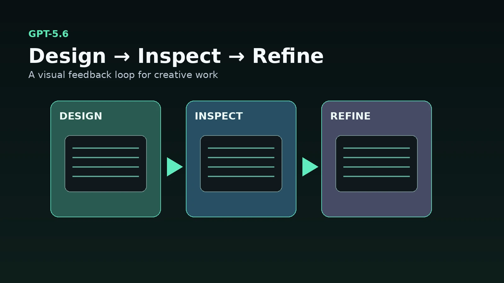
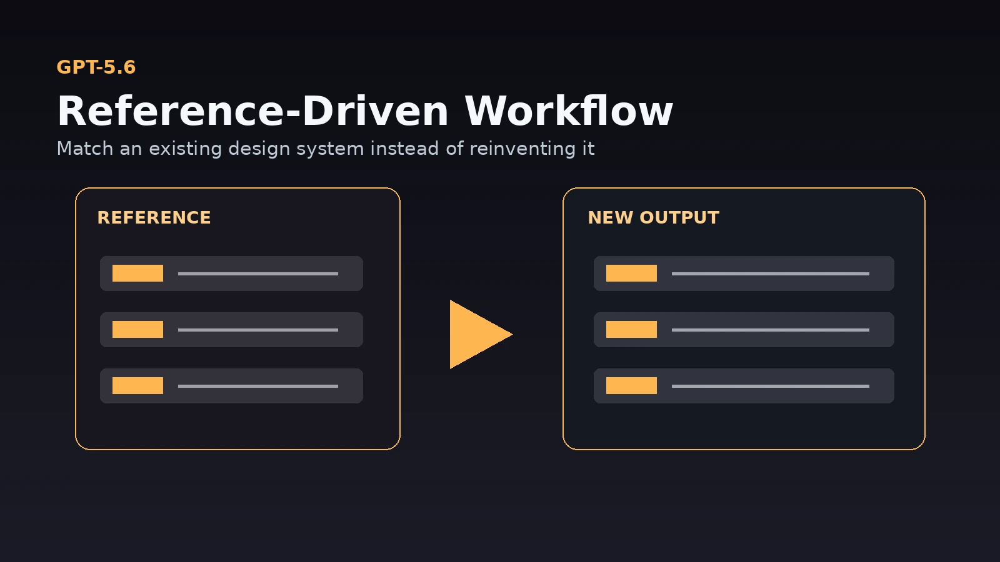

A new frontier AI model arrives.
Five minutes later, the internet has sixteen charts explaining that Model A scored 84.6 on ThingBench while Model B achieved 83.2, and everybody begins arguing like they personally trained both of them in their garage.
GPT-5.6 has plenty of benchmark numbers too.
The more interesting part for creative professionals is what OpenAI says the model is being trained to do differently.
GPT-5.6 puts more emphasis on design judgment, computer use, long-running workflows and producing finished artifacts rather than only answering questions.
For creators, artists and people building their own tools, that shift may matter considerably more than whether one benchmark moved three percentage points.
The model is becoming less like a consultant
Older AI workflows often followed this pattern:
You ask what to do.
The AI explains what to do.
You go do it.
That can be useful, but there is a giant gap between advice and execution.
GPT-5.6 is increasingly aimed at working through the task itself.
OpenAI specifically highlights stronger computer-use capabilities and the ability to inspect and refine rendered output instead of only producing underlying code or content.
That changes the relationship.
Instead of:
“Tell me how this interface should look.”
the workflow can move toward:
“Build it, inspect it, notice what looks wrong and fix it.”
That is much closer to working with another pair of hands.

Design judgment is becoming a real model capability
OpenAI calls out design as one of GPT-5.6's major areas of improvement.
The company says GPT-5.6 can take relatively high-level direction and produce interfaces with stronger layout, hierarchy and usability.
The important word there is judgment.
Generating valid CSS is not design.
Making something technically responsive is not design.
A good interface needs decisions about:
- Hierarchy - Spacing - Alignment - Density - Readability - Interaction - Consistency - Visual emphasis
Those are subjective problems.
There is not always one mathematically correct answer.
A model becoming better at those decisions is much more interesting creatively than simply becoming better at writing another button component.
This matters for people building their own tools
There has been an explosion of small custom applications built by people who would never have described themselves as software developers.
Artists are making:
- Asset managers - Prompt libraries - Translators - Render utilities - Image browsers - Automation dashboards - Production trackers - Creative experiments - Tiny games - Pipeline helpers
The coding barrier has dropped dramatically.
The new barrier is often polish.
You can get an AI to build a functioning interface fairly quickly.
Getting that interface to stop looking like twelve Bootstrap cards had a conference call is another problem.
Improved design reasoning helps close that gap.
Computer use makes visual feedback possible
One of the most important improvements is the model's ability to inspect the thing it created.
Code alone does not tell the entire story.
A web page may technically be correct while:
- Text overlaps - Buttons are awkward - A panel is too narrow - Important information disappears below the fold - Mobile layout collapses - Spacing looks wrong - Images crop terribly
A human catches those things by looking.
An AI that can operate the environment and inspect visual output gains something closer to that feedback loop.
Create.
Look.
Notice.
Adjust.
That loop is fundamental to creative work.
GPT-5.6 is also stronger with reference formats
OpenAI specifically highlights improved performance when GPT-5.6 is asked to follow existing presentation and document templates.
The model can infer recurring layout patterns, typography, spacing and structural conventions from reference material and apply them to new work.
That concept extends beyond PowerPoint.
Creative production is full of reference-driven tasks.
You may want an AI to understand:
- A website design system - A storyboard format - A branding guide - A blog template - A UI layout - A presentation style - A production document - A naming convention
Consistency is often more useful than originality.
Nobody wants page 14 of a client deck to suddenly discover its own artistic identity.

The model family gives different levels of horsepower
GPT-5.6 is not one single model.
OpenAI released Sol, Terra and Luna as different points on the capability and cost curve.
Sol is positioned as the flagship.
Terra targets more balanced everyday work.
Luna is designed as the lower-cost option.
The important idea for creators is not memorizing three names.
It is choosing enough model for the job.
A quick rename operation does not need the same reasoning budget as designing an application or debugging a complicated workflow.
AI tools are beginning to resemble render settings.
Not every frame needs 10,000 samples.
Sometimes “good enough and fast” is exactly correct.
Ultra introduces parallel agent work
GPT-5.6 also introduces an ultra setting for demanding tasks.
OpenAI describes it as coordinating multiple agents across parallel workstreams.
That could be especially useful for projects containing several independent problems.
For example, building a creative application might involve:
- UI design - Code implementation - Testing - Documentation - Asset handling - Error checking
Rather than processing all of those sequentially, multiple agent threads can work on separate pieces before the system combines the result.
That is closer to assigning work across a small team.
It also means the creator's job becomes increasingly supervisory.
The better the agents get, the more important the original specification becomes.
Giving five workers a vague instruction does not magically produce clarity.
It produces five extremely efficient interpretations of your confusion.
Better AI makes direction more important, not less
This is the part that tends to get lost.
As AI becomes more capable, taste becomes more valuable.
A system may be able to build ten versions of something.
You still need to decide:
Which one fits the project?
What should remain consistent?
What feels cheap?
What feels overdesigned?
What actually solves the problem?
What should be deleted?
The ability to produce more options does not eliminate creative judgment.
It creates more opportunities to use it.
BenchCAD is interesting, but don't overread it
OpenAI also reports a large improvement on BenchCAD, an evaluation involving CAD-related tasks.
That is interesting for 3D artists.
It does not mean GPT-5.6 suddenly replaces professional CAD or DCC software.
Benchmarks measure particular tasks under particular conditions.
Production 3D work involves messy scenes, plugins, artistic decisions, undocumented pipeline quirks and the occasional file that appears to have become haunted.
Still, stronger spatial and tool-oriented reasoning is worth watching.
AI systems are becoming increasingly capable around technical visual workflows, not only text.
What creators should actually test
Instead of asking whether GPT-5.6 is “smarter,” give it work that exposes the improvements.
Try asking it to:
- Build a small interface from a reference - Inspect the result and improve the layout - Recreate an existing template consistently - Debug a visual problem - Organize a multi-step creative project - Create a tool that solves a repetitive task - Compare several designs and explain which one works best - Refine something instead of regenerating everything
Those tests tell you much more than asking it a trivia question.
My takeaway
GPT-5.6 is interesting because AI is moving farther away from being a box you ask questions and closer to being something that can participate in a complete workflow.
Better design judgment matters.
Computer use matters.
Visual inspection matters.
Reference consistency matters.
Tool use matters.
Long-running task management matters.
Those capabilities are exactly what creative production needs.
The goal is not an AI that can tell you how to make something.
The useful version is an AI that can help make it, look at the result, understand why it is not quite right and keep working.
That is a much bigger transition than another benchmark record.
More practical AI and creative technology articles are available at: https://www.jasonarts.com/blog
Sources
OpenAI — GPT-5.6: https://openai.com/index/gpt-5-6/
OpenAI: https://openai.com/